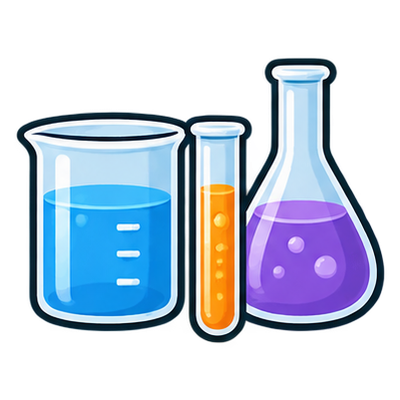
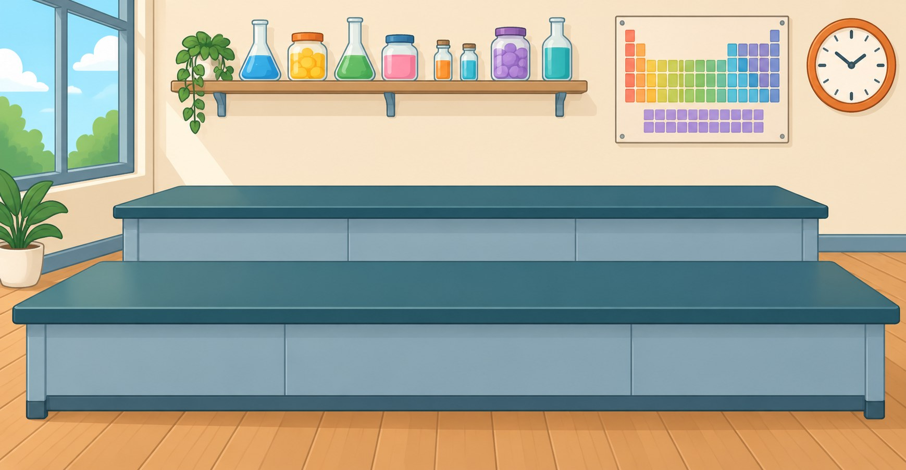
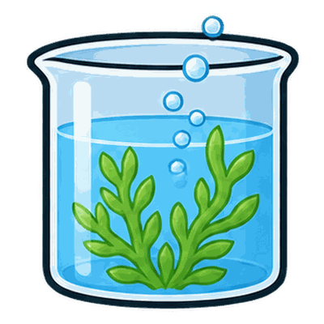
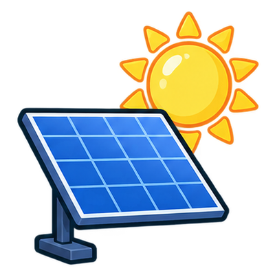

小小科學實驗室
在成人指導下認識器材與控制變因。
生活實驗與安全 · 建議 15–20 分鐘
進入實驗：小小科學實驗室 →
今天想研究什麼？29 項

在成人指導下認識器材與控制變因。
生活實驗與安全 · 建議 15–20 分鐘
進入實驗：小小科學實驗室 →
調整物鏡、焦距與載玻片，比較視野和影像方向。
細胞與觀察 · 建議 10–15 分鐘
進入實驗：虛擬顯微鏡 →控制光照、二氧化碳與溫度，找出限制因子。
養分與光合作用 · 建議 15–20 分鐘
進入實驗：光合作用因素實驗室 →用龐氏方格和子代抽樣，比較機率與實際次數。
遺傳 · 建議 15–20 分鐘
進入實驗：遺傳模擬實驗室 →辨識器官及系統關係；含擬真解剖圖，建議教師陪同。
生物體構造 · 建議 20–30 分鐘
進入實驗：青蛙虛擬解剖實驗室 →從透鏡外形、折射到成像，逐步建立光路概念。
光學 · 建議 10–15 分鐘
進入實驗：凹透鏡與凸透鏡 →比較物距改變時實像和虛像的大小、方向與位置。
光學 · 建議 10–15 分鐘
進入實驗：凸透鏡成像 →比較正常眼、近視、遠視與矯正透鏡。
光學 · 建議 10–15 分鐘
進入實驗：眼睛如何看見蝴蝶 →比較色光相加與顏料混合，不把螢幕顏色視為真實顏料。
光學 · 建議 10–15 分鐘
進入實驗：光與顏料三原色 →比較合力、質量、加速度與運動圖表。
力學 · 建議 15–20 分鐘
進入實驗：力與運動實驗室 →調整密度、體積和液體，比較浮沉與排開液重。
力學 · 建議 15–20 分鐘
進入實驗：浮力與密度實驗室 →從粒子重排與原子盤點認識反應比例和守恆。
物質與化學 · 建議 15–20 分鐘
進入實驗：粒子與化學反應實驗室 →比較指示劑與強酸強鹼中和的理想模型。
物質與化學 · 建議 15–20 分鐘
進入實驗：酸鹼與指示劑實驗室 →沿純水加熱曲線比較溫度、能量與物態。
熱學 · 建議 15–20 分鐘
進入實驗：熱與物態實驗室 →觀察質點、反射、干涉與駐波。
波與聲 · 建議 15–20 分鐘
進入實驗：波動實驗室 →先預測串並聯電路，再通電比較電流和電壓。
電與磁 · 建議 15–20 分鐘
進入實驗：電路虛擬實驗室 →比較磁場、電流與換向器如何讓線圈連續轉動。
電與磁 · 建議 15–20 分鐘
進入實驗：直流馬達的原理 →
觀察板塊剖面，再由測站資料定位震央。
板塊與地震 · 建議 15–20 分鐘
進入實驗：板塊與地震實驗室 →從太空與地球視角比較月相，不把月相誤認為地影。
天文 · 建議 10–15 分鐘
進入實驗：月相盈虧互動教室 →調整凸凹透鏡與物距，從兩條光線和像距讀值判斷實像、虛像與焦點奇異情況。
光學 · 建議 15–20 分鐘
進入實驗：光學與透鏡成像實驗室 →從波速、頻率與波長出發，比較開管與閉管的共振條件；不把音高和音量混為一談。
波與聲 · 建議 15–20 分鐘
進入實驗：波動、聲音與共振實驗室 →比較電流產生磁場、線圈受到轉矩，以及轉動線圈產生感應電壓三種方向不同的關係。
電與磁 · 建議 20–25 分鐘
進入實驗：電磁鐵、馬達與發電機實驗室 →分開觀察水深與液壓、密閉氣體的壓縮，以及水平管中截面、流速和壓力的關係。
壓力與流體 · 建議 15–20 分鐘
進入實驗：氣壓、水壓與流體實驗室 →用明確標示的教學溶解度曲線，分辨已溶解質量、未溶固體與溶液濃度。
物質與溶液 · 建議 15–20 分鐘
進入實驗：溶解度與濃度實驗室 →沿斜坡改變位置，追蹤重力位能、動能與摩擦產生的內能，檢查總能量帳。
力學與能量 · 建議 15–20 分鐘
進入實驗：能量轉換與守恆實驗室 →分開調整月球相位角與交點方向，理解為何每月有朔望，卻不會每月都有日月食。
天文 · 建議 15–20 分鐘
進入實驗：月相、日食與月食實驗室 →改變緯度、地軸傾角與季節位置，比較正午太陽高度、日長及極晝極夜。
天文 · 建議 15–20 分鐘
進入實驗：四季與太陽高度角實驗室 →用相對量比較植物白天與黑暗中的淨氣體交換，另看濕度和氣孔開度如何影響蒸散。
植物生理 · 建議 15–20 分鐘
進入實驗：呼吸作用、蒸散與氣孔實驗室 →先讀懂食物網箭頭，再比較營養階層能量與單一族群的承載量模型。
生態 · 建議 20–25 分鐘
進入實驗：生態系、食物網與族群實驗室 →沒有符合的教材，請更換關鍵字或清除篩選。